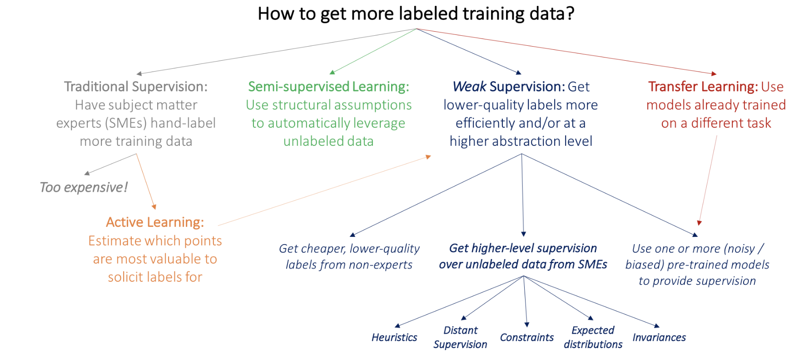
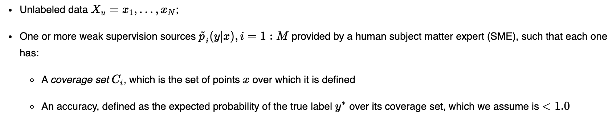
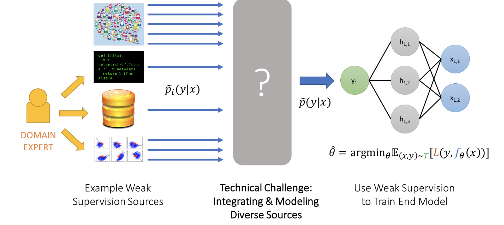
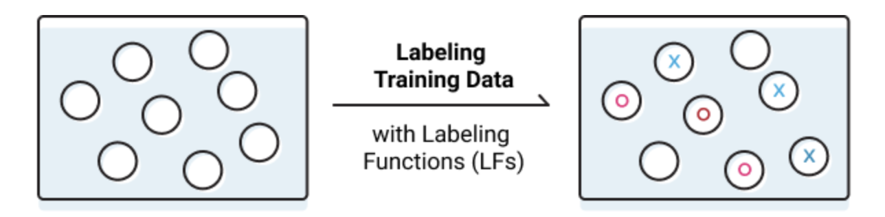
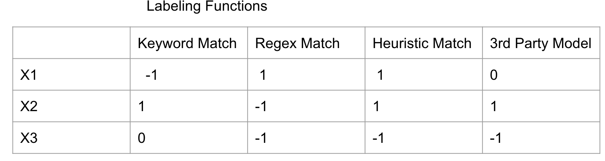
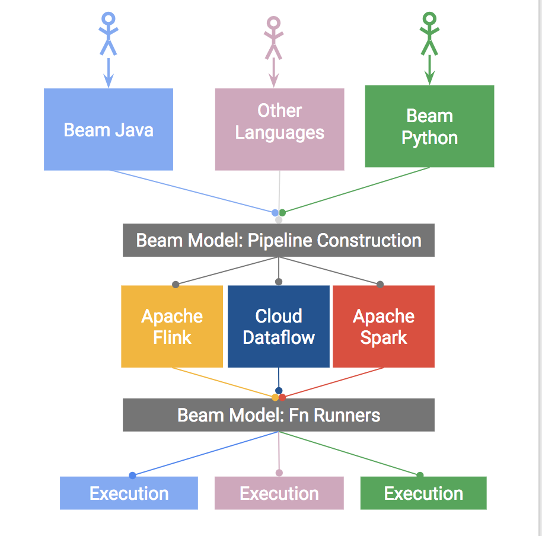
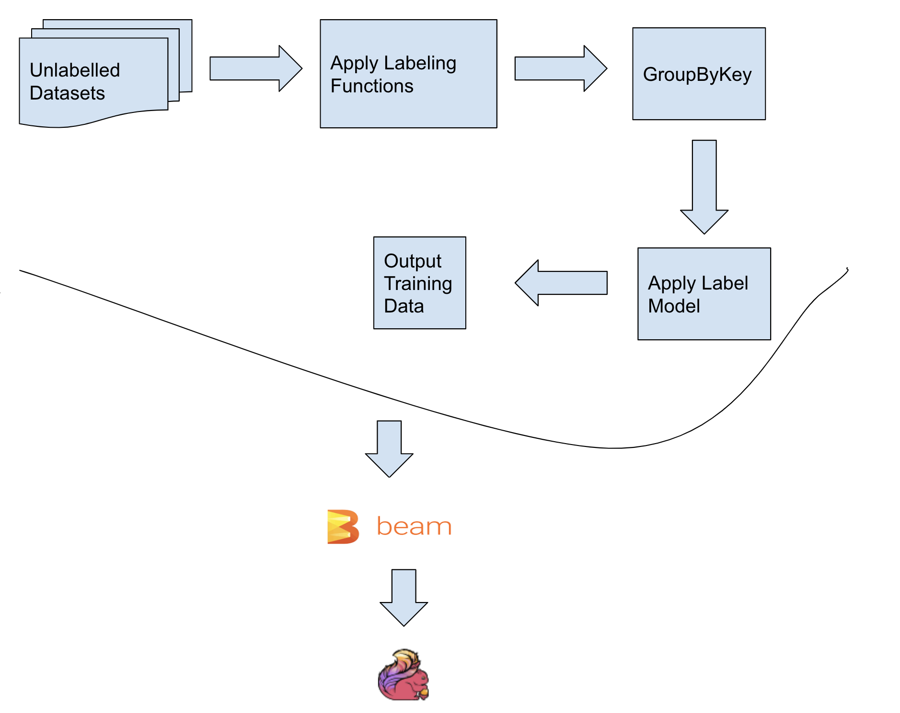

Snorkel BeamBell: Weak Supervision on Apache Flink
Suneel Marthi
February 2, 2020
FOSDEM, Brussels, Belgium
$WhoAmI
Suneel Marthi
@suneelmarthi
- Member of Apache Software Foundation
- Committer and PMC on Apache Mahout, Apache OpenNLP, Apache Streams
Agenda
- What is Weak Supervision ?
- Why is it Needed?
- What problem does it solve?
- What are Learning Functions?
- Overview of Apache Beam
- Sample Use Cases
OSS Tools
- Snorkel - Framework for Programmatically Building and Managing Training Data
- Apache Beam - Unified model for defining both batch and streaming data-parallel processing pipelines
- Apache Flink - distributed processing engine for stateful computations over data streams.
Problem of Labeled Training Data
Typical Supervised Approach
Set of Datapoints, x ∈ X
Set of K classes, y ∈ Y = 1,2, ...., K
Learn a classifier, h : X → Y
Get a set of Ground Truth labels, T - (x1,y1),...,(xN,yN)
Traditionally annotated by Subject Matter Experts
Minimize Aggregated loss on Training, eg: SGD (or a loss function)
Problems with this Approach
- Labeling and managing training datasets by hand is one of the biggest bottlenecks in machine learning
- Professionals are not grad students to accept burritos or T-shirts as remuneration for labor
- Creation of labeled training data becomes prohibitively expensive and impossible when dealing with large datasets
Insufficient Labeled Data
- Lack of Initial labeled training data to kick start Machine Learning models
- Lack of training data available over time unlike the big Internet companies
- Maybe many years in order to accummulate sufficient training data
- Modern Deep Learning Models need massive sets of handle-labeled data
Lack of Subject Matter Expertise
- Labeling training data requires necessary subject matter experise
- Labeling and managing training datasets by hand is one of the biggest bottlenecks in machine learning.
- Creation of labeled training data becomes prohibitively expensive and impossible when dealing with large datasets
For eg: Having to deal with datasets at Google Scale
Ways of generating labeled data

Source: https://hazyresearch.github.io/snorkel/blog/ws_blog_post.html
What is Weak Supervision ?
Weak supervision is about leveraging higher-level noisier input from subject matter experts (SMEs).
Same Objective as Supervised setting, however instead of Ground Truth data we have:

Weak Labels
- Intent is to decrease the cost and increase the efficiency of human efforts expended
in hand-labeling data.
- Leverage Subject Matter Expertise to get less precise input to create heuristic rules for labeling data
"Data Programming: Creating Large Training Sets, Quickly" - Alexander Ratner, Christopher De Sa, Sen Wu, Daniel Selsam, Christopher Ré https://arxiv.org/pdf/1605.07723v3.pdf
Imprecise Labels
Use a higher level, less precise input from Subject Matter Experts to create heuristic rules
Eg: For Spam classification in YouTube comments:
return SPAM if 'contact us' in text
3rd party models to generate labels
Eg: Use a Sentiment Classifier for 'Spam/Ham' classification
Ways of generating labeled data

Source: https://hazyresearch.github.io/snorkel/blog/ws_blog_post.html
Introducing Snorkel
- System for programmatically building and managing training datasets without manual labeling
- Develop training datasets in hours/days, as opposed to hand-lableling over several weeks
See https://www.snorkel.org
Labeling Functions are one the core operators for building and managing training datasets programmatically in Snorkel

Source: https://hazyresearch.github.io/snorkel/blog/ws_blog_post.html
Labeling Function for Keyword Match
@labeling_function()
def lf_keyword_my(x):
"Many spam comments talk about 'my channel', 'my video', etc."
return SPAM if "my" in x.text.lower() else ABSTAIN
Labeling Function with Regex Match
@labeling_function()
def lf_regex_check_out(x):
"Spam comments say 'check out my video', 'check it out', etc."
return SPAM if re.search(r"check.*out", x.text, flags=re.I) else ABSTAIN
Labeling Function with Heuristics
@labeling_function()
def lf_short_comment(x):
"Non-spam comments are often short, such as 'cool video!'."
return NOT_SPAM if len(x.text.split()) < 5 else ABSTAIN
Labeling Function with 3rd Party models
@labeling_function()
def lf_textblob_polarity(x):
"""
We use a third-party sentiment classification model, TextBlob.
We combine this with the heuristic that non-spam comments are often positive.
"""
return NOT_SPAM if TextBlob(x.text).sentiment.polarity > 0.3 else ABSTAIN
Apply the Labeling Functions to unlabeled data to generate a Label Matrix

- Output of labeling functions may overlap/conflict, given the unknown accuracies and correlations with LFs.
- Use a LabelModel to automatically estimate the accuracies and correlations, and produce a final set of integrated training labels
Finally, Train a Classifier
- Ultimate Goal of Weak Supervision is to create training dataset
- This dataset can now be plugged into any ML Framework like Keras, PyTorch etc. to further train Deep Learning Models
How to Scale - Batch or Stream ?
"Batch is an extension of Streaming, except when Streaming is an extension of Batch"
-- Shannon Quinn, Apache Mahout
Spark or Flink ?
"Spark Streaming is for people who want to operate on their streams using Batch idioms.
Flink Batch is for people who want to operate on their batches using Streaming idioms."
-- Joey Frazee, Apache NiFi
What is Apache Beam?
- Agnostic (unified Batch + Stream) programming model
- Java, Python, Go SDKs
- Runners for Dataflow
- Apache Flink
- Apache Spark
- Google Cloud Dataflow
- Local DataRunner
The Apache Beam Vision
- End Users: Create pipelines in a familiar language
- SDK Writers: Make Beam concepts available in new languages
- Runner Writers: Support Beam pipelines in distributed processing environments

Weak Supervision Training Pipeline

Links
- Snorkel: https://www.snorkel.org/
- Slides: https://smarthi.github.io/FOSDEM-2020-Weak-Supervision-on-Apache-Beam/index.html#/